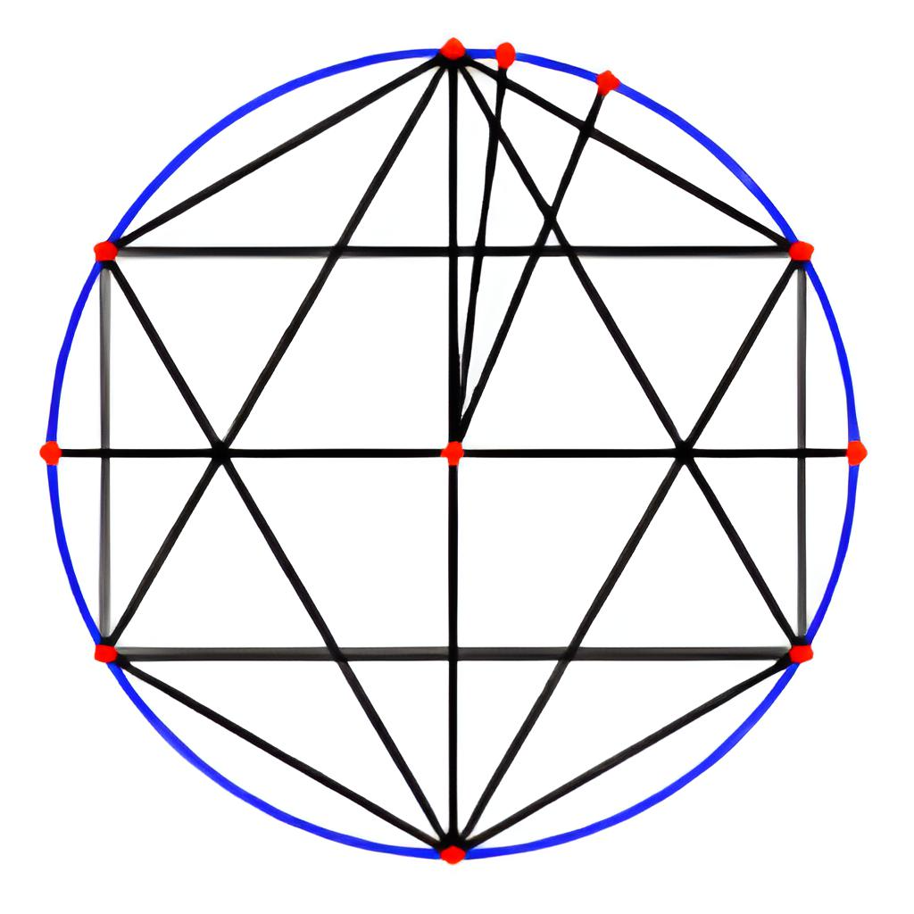
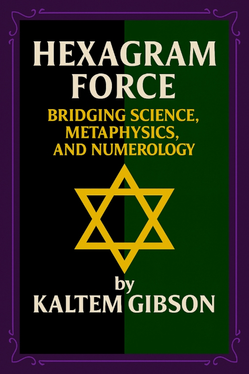
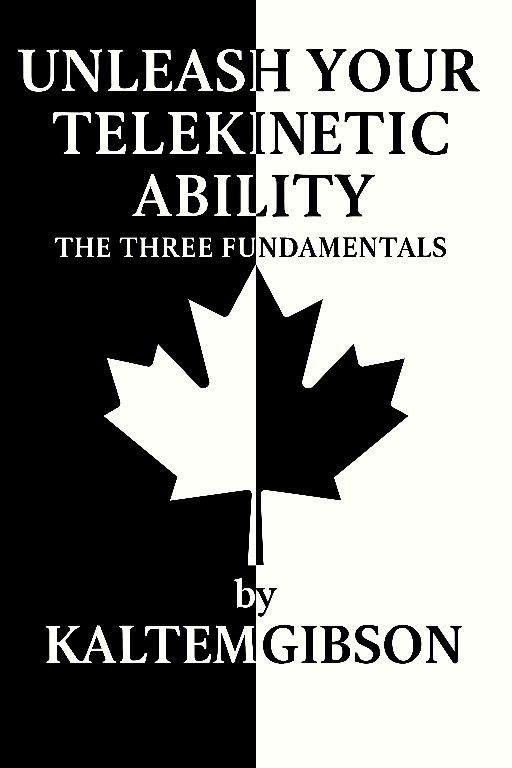

The Works of Kaltem M. Gibson: EbooksThe information contained within this website challenges established paradigms. This is the research they prefer remains obscured. Access this extraordinary information now while this website remains active before external pressures force this content offline.
Official Author Portfolio & Research Verification Repository
You have encountered a rare repository of information that challenges the very foundations of how we perceive reality. Within this archive, I provide a unique gateway to the structural mechanics of the universe—demonstrating how the Unified Field and the geometric laws governing planetary orbits also facilitate the internal mechanics of telekinesis. I encourage you to set aside at least ten minutes to focus on the theorems presented here or to bookmark this page immediately, as these insights offer a vital new perspective on the expansion of human potential.

This foundational framework unites four volumes—Nog, Quark, Rom, and Ishka—into a single, collective theory aimed at unifying Force as a single phenomenon. It establishes the geometric order connecting the universe, the earth, and biological structures.
This book presents a unified structural model of force based on cyclic order and linear geometry. Using the 12-unit clock as a closed rotational system, it reveals an underlying architecture composed of interlocking hexagrams that encode opposing force currents.

The practical application of the Unified Field Theory. This manual guides the reader through the mechanical exercises required to align internal perception with external force-roles to achieve physical manifestation.